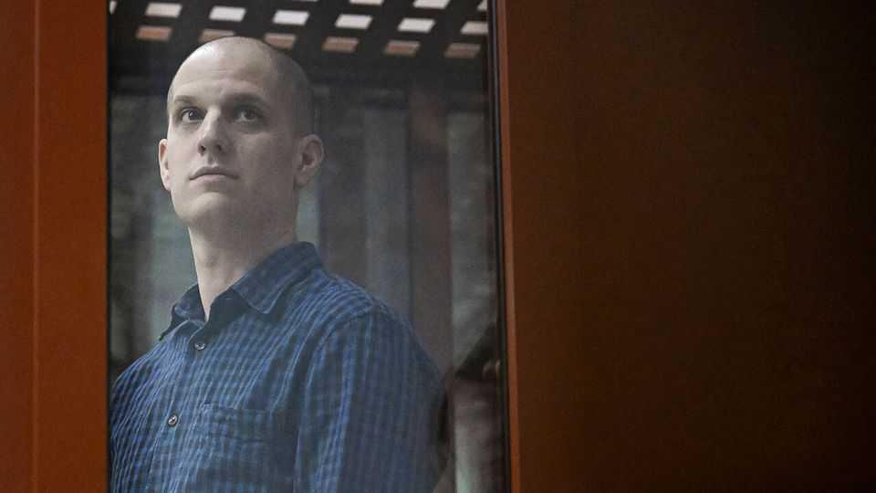

In Evan Gershkovich’s new memoir, prison is a microcosm of Russia
His stint behind bars offers a window onto the country’s wartime soul

Oct 1st 2026
There are three types of people in Russia, runs an old joke: those who have been in prison, those who are currently in prison—and those who will be. Under capricious rulers, incarceration is an ambient risk, which can be a mark of virtue rather than degeneracy. For Dostoyevsky and others, it incubated moral clarity and spiritual rebirth. In his new memoir Evan Gershkovich, an American journalist, quotes a character of Tolstoy’s: “The only suitable place for an honest man in Russia…is prison.”
A son of Russian-speaking Soviet emigrants to America, Mr Gershkovich is now in the first of those three carceral categories. He spent 16 months in Russian custody, an ordeal he chronicles in “This Cursed Beautiful Land”. Prison, it shows, is still a barred window onto the truths of an inescapable country.
He moved to Russia in 2017 to work for the Moscow Times, later joining the Wall Street Journal. It seemed, initially, that the old rules of post-Soviet journalism still applied: that foreign reporters enjoyed a licence which their beleaguered Russian counterparts lacked. In bygone days, if an official criticised your coverage, it was generally a bid to extract a bung (or a bottle). “I am sick,” a minder once complained to The Economist, “and nobody has brought me any medicine.”
But the rules were changing. Russia began grabbing Americans to trade as hostages. With the invasion of Ukraine, any residual freedom of speech was squished. Mr Gershkovich saw the danger, but reckoned he was more likely to be expelled than arrested. In March 2023 he flew to Yekaterinburg to look into tank production. Seized by balaclava-wearing agents of the FSB, Russia’s almighty security service, he was hooded, punched and accused of espionage.
Vladimir Putin had instructed his goons to catch more spies; they gave him Mr Gershkovich. He spent most of his captivity in Lefortovo, an FSB-run prison in Moscow with a grim reputation, where he was relatively coddled. He evokes the grinding routines and indignities (the deadbolt and peephole, grotty food and smells); the snatched joys, such as the bliss of once-a-week showers; and the slow-quick wooziness of time inside.
Prison culture in Russia, however, is not just a curiosity. It helps explain the mindset of the gangsterish leadership—not least the imperative, explained to Mr Gershkovich, to always “hit first in a fight”. Prison is a front in the war on Ukraine: he encountered men who were recruited in jail, fought, survived, came home and got rearrested. Others were pressed to sign up. As in Dostoyevsky’s era, this moving prison sketch is a scan of Russia’s soul.
It is a bleak picture, but not entirely. Travel around Russia, and you find people who rant against the West, then politely invite you home for tea. Mr Gershkovich experienced an extreme version of this whiplash. Many of his guards, and some FSB agents, were curious about America, friendly, even kind; they suggest the inferiority complex and political apathy behind the Kremlin’s bombast.
At the poignant heart of this book is the author’s bond with his cellmates (who, for their safety, he presents as a composite figure, Seryoga). Though he initially feared Seryoga was an informant, they became improbably close and mutually supportive, playing backgammon and watching movies on their cell TV. At moments Mr Gershkovich felt he “cared about him more than anyone else in the world”. After he was freed, he was served stuffed pigeon at a fancy dinner and “thought of Seryoga and the pigeons that visited our cell window”.
That was after complex diplomacy which saw him and others traded for a Russian group including an fsb assassin. (Until his death, it seemed Alexei Navalny, an opposition leader who chose prison over exile, might be part of the deal.) First though, for his sham trial Mr Gershkovich was taken back to Yekaterinburg, where he met inmates tortured with electric shocks. He wrote an obligatory, but sassy, pardon request to Mr Putin. In August 2024 Joe Biden hugged him on the tarmac in Maryland.
So this tale of punishment without a crime turns into an offbeat love story. It also has some unassuming heroes—not the overseas diplomats and politicians who succeed in freeing Mr Gershkovich, but the Russian lawyers who bravely conduct his futile defence. The futility is what makes it heroic. “One day all of this will come crumbling down,” one says. For now, the aim is “to preserve some semblance of a foundation from which to rebuild”. As another Russian proverb insists: hope dies last. ■